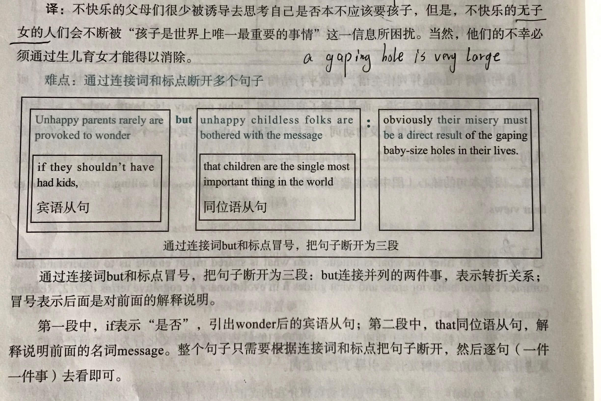
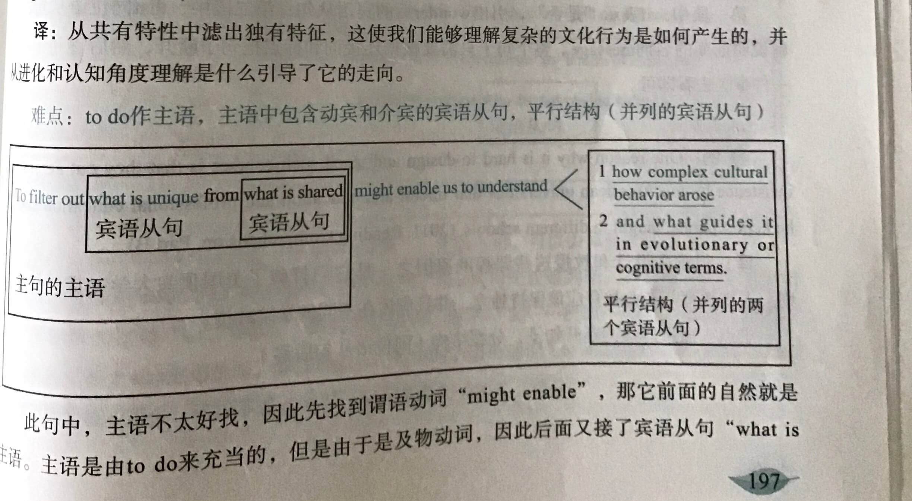
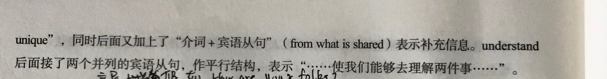

欢迎分享你的句子
@xixi：Owing to the remarkable development in mass communications, people everywhere are feeling new wants and are being exposed to new customs and ideas , while governments are often forced to introduce still further innovations for the reasons given above.
解析:
1.owingto引导一个原因状语
2.people是主句主语，后面两个并列谓语
3.第一个谓语是are feeling new wants,第二个谓语是are being exposed to new customs and ideas
4.while引导了一个状语从句
翻译:大众通信的显著发展使各地的人们不
断感到有新的需求，不断接触到新的习俗和
思想，然而由于上述原因，政府常常得推出
更多的革新措施。
@心灵:Unhappy parents rarely are provoked to wonder if they shouldn't had kids，but unhappy childless folks are bothered with the message that children are the single most important thing in the world： obviously their misery must be a direct result of the gaping baby-size holes in their lives. （2011,Reading Comprehension, part A text4)
难点提示：含有同位语从句、多个句子可以通过连接词和标点断开

@少年:Yet increasing evidence suggests that human prejudices have been baked into these tools because the machine-learning models are trained on biased data. Far from avoiding racism, they may simply be better at hiding it. Many critics now view these tools as a form of tech-washing, where an appearance of objectivity covers mechanisms that perpetuate inequities in society.
思考题：
What is the author’s attitude towards these tools?
(A) biased (B) skeptical (C) objective (D) tolerance
词汇提示：
1.increasing evidence 越来越多的证据
2.human prejudices 人类的偏见
3.the machine-learning models机器学习的模式
4.biased 歧视性的
5.Far from：远没有
6. simply干脆
7.tech-washing 技术性洗白
8. mechanisms 机制
9.perpetuate 使…持续
10.inequities 不平等
文章背景:Predictive policing algorithms are racist. They need to be dismantled.预测性警用算法是种族主义的。它们需要被解除。
翻译：根据历史经验和现时环境预测未来的能力历来是人类智能的桂冠。在古老的原始部落，人们就尊崇这方面能力出众的巫师们，给予他们极高的社会地位。而现在，我们期待机器学习和人工智能掀起一场新的革命,从大数据中读取解锁未来的钥匙。然而，最早借助这些预测技术的美国警察们却发现，旨在帮助他们超越个人偏见的算法，却因为训练数据的“原罪”而天然地带有系统性歧视。本这些算法不仅没有维持中立和客观，还以技术的外衣洗白了种族歧视。就像电脑普及后，我们可以大大方方地把自己的错误归结为电脑故障，歧视也得以“无辜脸”地隐身于算法之中。
第一句:
Yet increasing evidence suggests that// human prejudices have been baked into these tools because the ma
chine-learning models are trained on biased data.
参考译文:然而，越来越多的证据表明，这些工具中已经植入了人们的偏见，因为机器学习模型是由歧视性的数据训练的。
第二句:
Far from avoiding racism, // they may simply be better at hiding it.
参考译文:它们远未避免种族主义，可能只是更擅长隐藏种族主义。
第三句:
Many
critics
now
view
these tools
as a form of
tech-washing,
where
veneer
of
objectivity
covers
mechanisms that
perpetuate inequities in
society.
参考译文:现在，许多批评
家将这些工具视为一种技术
洗白，用表面的客观来掩盖
延续社会不平等的机制。
思考题解析:
What
is
the
author's
attitude
towards
these .
tools?
(A) biased (B) skeptical (C)
objective (D) tolerance
从第二句中可以知道答案为
B!
@Jennifer:To filter out{ what is unique from (what is shared )}might enable us to understand(how complex cultural behavior arose and what guides it in revolutionary or cognitive terms.)
tip:划分句子成分


@鼠标：For the women of my generation who were urged to keep juggling through the 80’s, down-shifting in the mid 90s is not so much a search for the mythical good life--growing your own organic vegetables, and risking turning into a simpler, less materialistic lifestyle --as a personal recognition of your limitations.
对于我这一代曾在整个80年代为生活奔波的女人来说，90年代中期出现的归隐恬退与其说
是我们寻求一种神话般的美好生活(用有机肥种植蔬菜,并且冒险去过一种更加简单和更少
物质的生活方式)不如说是我们清醒地认识到自身能力是有限的。
搭配: not so (as) much...as...比较结构，通常理解为:与其说...不如说...
例如: He was not so much angry as disappointed.他与其说愤怒不如说失望。
They found that after a surprise departure,the probability that the company will subsequently have to restate earnings increases by nearly 20%. The likelihood of being named in a federal class-action lawsuit also increases,and the stock is likely to perform worse.
思考题：According to the message，after an outside director’s surprise departure，the firm is likely to ___.
A. become more stable
B. report increased earnings
C. do less well in the stock market
D. perform worse in lawsuits
While warnings are often appropriate and necessary--the dangers of drug interactions, for example--and many are required by state or federal regulations, it isn’t clear that they actually protect the manufacturers and sellers from liability if a customer is injured.
European Union leaders on Tuesday provided a vital lifeline for the Mediterranean countries that have sometimes felt abandoned by Brussels amid the coronavirus pandemic, reaching a deal to pump money into their hard-hit economies. Though the rescue package was celebrated by nearly all the leaders after four days of tense negotiations, the reaction was perhaps most notable in Europe‘s south — particularly in Italy.
思考题： It can be inferred from the text that__.
A. Brussels has threatened to abandon Mediterranean countries
B. the rescue package was only well-received among Europe’s south
C. Italy maybe one of the hard-hit economies in the European Union
D. Italian politicians maybe widely known as being short-sighted
词汇突破：
One of the astonishing revelations was how little Rebekah Brooks knew of what went on her newsroom, how little she thought to ask and the fact that she never inquired how the stories arrived.(2015 Reading comprehension part A text 4)
In all, the study concludes that whereas prosecutors should only evaluate a case based on its merits，They do seem to be influenced by a company's record in CSR.
“We estimate that either eliminating a substantial labor-rights concern，such as child labor，or increasing corporate giving by about 20% results in fines that generally are 40% lower than the typical punishment for bribing foreign officials.”says one Researcher.